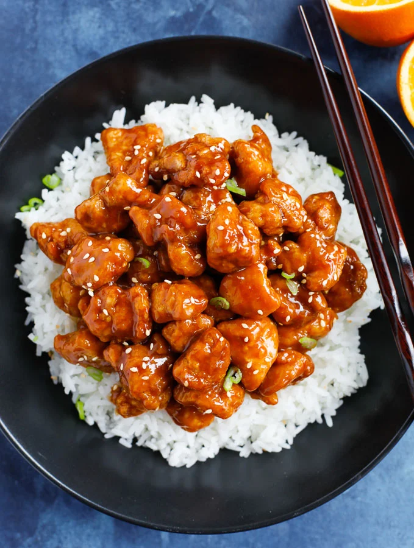

Orange Chicken

Description
Today I will be teaching you the culinary favorite of the eastern world, Orange Chicken.
This recipe is made from delicious fried chicken basked in orange cracked sauce.
Ingredients
- chicken
- sugar
- soy sauce
- batter
- oil
- seasame seeds
Steps
- fry chicken with the batter in hot oil
- combine sugar and soy sauce
- toss seasame seeds over and remove from heat
- Enjoy your delicious culinary favorite!